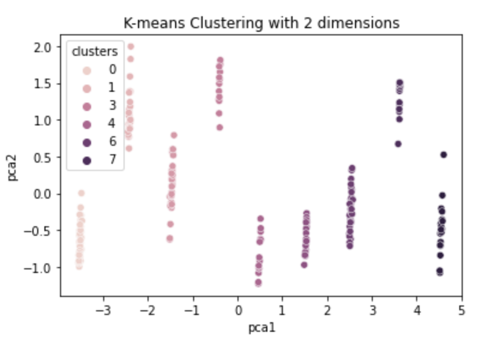
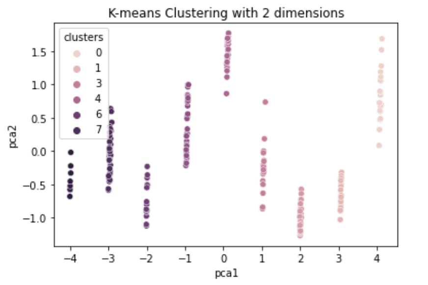

Predicting COVID-19 Spread Based on Country’s Metrics
Country Dataset: Each datapoint is a country with about 50 features, including GDP, Population Density, Urban Population, etc.
COVID-19 Dataset: Each row has a country and date, along with Covid statistics for that country/date. These statistics include new cases, deaths, and tests
We will combine datasets based on the country key. We will also combine multiple rows of the Kaggle dataset to generate a dataset that records total cases per country over time (every 2 weeks). The ground truth is the true number of reported COVID cases per country.

We are trying to understand how effective the different characteristics of countries around the world (e.g.total population, population density, GDP) affect the rate at which COVID-19 spreads around the corresponding country. Some models rely on user’s inputs such as local population, current status of infection, while others focus more on data reported by the World Health Organization and their government. In addition, there seems to be a lack of information around the handling of coronavirus. It is easy to say a certain place’s government handled coronavirus well because the cases are low, and another’s handled it poorly due to the high rate of infection. However, this approach lacks context, failing to take into account the differences in countries.
We are analyzing unique combinations of features of countries to approach this problem. We will also try multiple machine learning approaches and see what is most effective. We think this will be successful because we can be flexible in our model choice and the country features we choose to analyze. Potential supervised methods we want to test out include linear regression, LDA, and decision trees. There are concerns about the accuracy of data regarding the spread of COVID, with certain countries underreporting or undertesting, which could have implications on the data of our model. Therefore, if we are not clear about the potential limitations of our model, we run the risk of spreading misinformation. We will be using free libraries and methods to perform our analysis. So, it will not cost anything. Depending on the method we use to analyze, the time will vary. For unsupervised methods, we will use GMM to cluster the data and look for relationships between the countries. From this clustering, we plan on learning if clustered countries have a similar Covid-19 spread.
For pre-processing we will remove several features. Some features contain information already encoded in other features. For example, we have information on population, surface area, and population density. We can remove population density in this situation, as it is population/surface area. There are also variables we think will likely be irrelevant to our findings, such as forested area or number of endangered species, which we plan to remove. Lastly, our data is entirely numerical except for the region in which a country resides (e.g. southern asia) which we will represent using one-hot encoding.
We will use half the dataset to train the model, and then check for accuracy against the other half of the dataset on past data. We can also predict the future rate of COVID-19 spread and wait until the predicted date to compare the actual spread against our predicted value. Our goal is to be within 10% of the true value. For example, we can predict total COVID-19 cases for a certain country 1 week into the future, and then see what the true value is once that time comes.
We are trying to provide unbiased prediction of COVID-19 spread by using various parameters for a better understanding of how each country operates and to combat spread of COVID-19 based on the predicted trajectory.
The goal for this touchpoint was to clean and pre-process our data, as well as perform unsupervised learning algorithms.
Our country dataset had many features, some of which were extraneous. In order to focus on relevant features, we removed the following columns:
Next, we had to deal with misformatted and missing data.
There were a few types of misformatted data in our initial country dataset. Each country had a region feature (ex: CentralAmerica or NorthernAfrica). To represent these features numerically instead of as a string, we one-hot encoded each country's region. We split each region name into an individual column, putting a 1 if the country was from that region (0 if not). The next type of misformatted data was columns with multiple data values separated by a "/". For example, "Pop. using improved drinking water (urban, rural %)" with a value like "45.1/27". We separated this type of data into two columns, delimiting at the "/".
Throughout the dataset, there were many types of missing data. Examples include "...", "-99", "". There also were cells with "~0", "-~0.0", and "-~0". We replaced all the approximately 0 values with 0. Then, we filled in all the missing data values by using the K-nearest neighbors algorithm. For our k-value, we decided on using the square root of the number of datapoints we had. At the end, we had a clean dataset with purely numerical values.
Now that we had a clean country features dataset, we now had to merge it with a dataset containing Covid-19 data for countries. Our Covid-19 dataset contained the number of cases in a country on every day starting from the beginning of the year. Because countries had different dates of first reported infection, we reduced the data down into number of Covid-19 cases 5 days, 25 days, and 50 days after first infection. Then, we added these 3 columns as features to our cleaned country dataset.
Our goal for unsupervised learning was to cluster our countries, both with and without the Covid-19 features added.
We performed the DBSCAN algorithm because we suspected there were strong outliers among the countries, for example the USA and China.


As seen in the images, most of the countries are similar in terms of population and GDP, however there are a few outliers like the USA and China that are far removed from the majority of the others. These outliers represent countries with a large GDP and population. The yellow cluster includes Ghana, Mozambique, Nepal, and Yemen. The green cluster includes Hong Kong, Denmark, Ireland, Israel, and Singapore. The majority of other countries are in the purple cluster.
We performed the kmeans algorithm on the dataset without the number of covid cases and with the number of covid cases after 5 days, 25 days, and 50 days. The first image is the clustering without covid cases and the second picture is with covid cases.
 We chose k-means clustering because it's a common clustering algorithm that we learned in class. We used the elbow method to determine the number of clusters, which is 9. For the clustering without covid cases, countries seems to be grouped in terms of either common region and/or gross domestic product. For cluster 0, countries such as Japan, South Korea, Singapore, New Zealand, Netherlands, Hong Kong, Canada, Australia, United States, etc. This seems to be clustering "First World" countries with higher values in GDP and trading rates. For cluster 1, countries such as Saint Lucia, Bahamas, Dominican Republican, Turks and Caicos Islands, United States Virgin Islands, etc. This cluster seems to be grouping island countries located in the Carribean Sea. The rest of the clusters are grouped in respective to their GDP or to the regions that are closest to each other. As for clustering with covid cases, there were 2 clusters that did not have any changes. One of the cluster consists of countries located in the Carribean Sea and the other cluster consists of European countries located near the Mediterranean Sea. For the rest of the clusters, there is a 4-12 differences between the results from kmeans without covid versus with covid. Countries seems to be clustered geographically closer to countries near them. For example, Afghanistan, Bangladesh, Cambodia, and Bhutan were in the same cluster without covid cases, but were then put into clusters to countries that were closer to them with covid cases. Argentina, Colombia, and Bolivia were in the same cluster as a handful of Southeast Asian countries without covid, but were grouped into clusters with South American countries with covid.